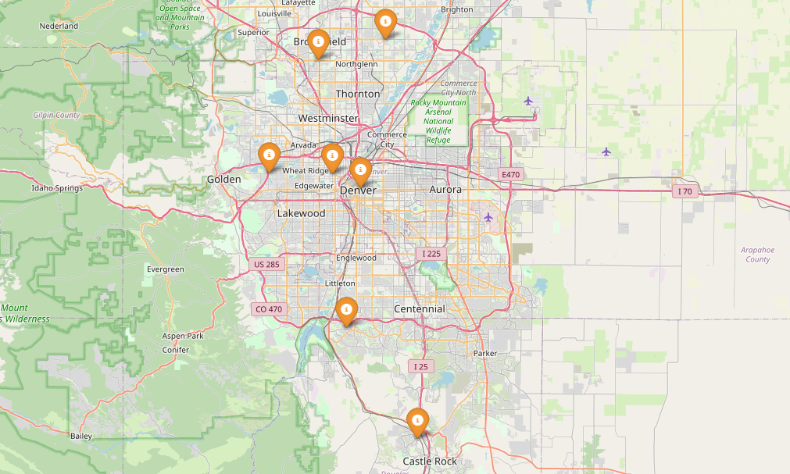
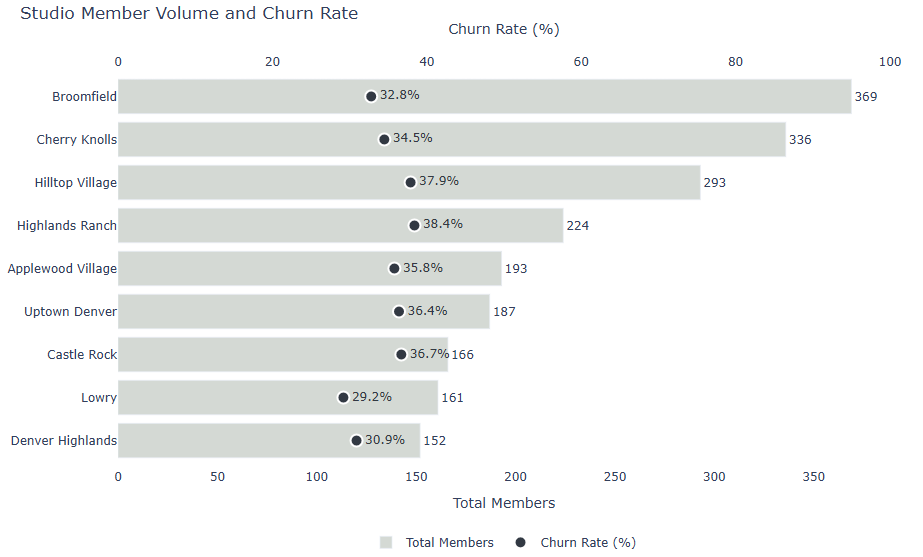
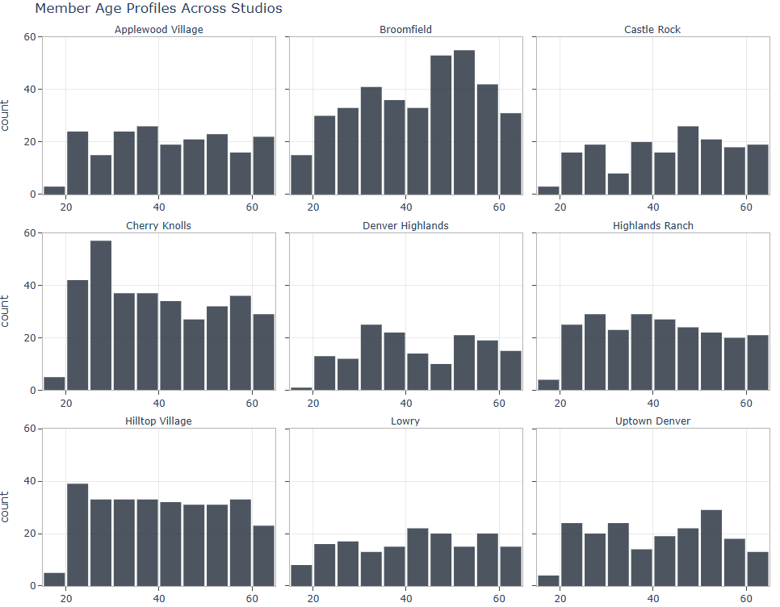

Part 2: Exploratory Data Analysis (EDA)
Why do some members stay while others disappear?
This section highlights key behavioral patterns and member characteristics by analyzing tenure, engagement, and referral source, revealing early signs of churn risk.
View full notebook on GitHub
EDA Highlights
Studio Locations
Studio addresses were geocoded to visualize coverage across metro Denver. This spatial context helps operators pinpoint regional churn trends and explore location-driven performance differences.
{kind=link}
Studio Member Volume and Churn Rate
Churn rates across locations range from 29% to 38%, underscoring the importance of location-specific retention strategies.
{kind=link}
Studio Member Volume and Churn Rate Takeaways:
- High-risk studios
Highlands Ranch (38.4%), Hilltop Village (37.9%), and Castle Rock (36.7%) show the highest churn, pointing to potential engagement or operational issues. - Top performer
Lowry leads with the lowest churn (29.2%), suggesting strong onboarding or retention practices. - Studios like Uptown Denver and Applewood Village (mid-30% churn) are stable but offer room for optimization.
Age Distribution
Understanding member demographics across locations is crucial for tailored retention. Age often serves as a proxy for stability and preferences. Certain studios skew older (e.g., Broomfield), which may correlate with lower churn or different class preferences.
{kind=link}
Gender Mix
Every studio maintains a relatively balanced gender mix (roughly 30-40% Female, Male, and Non-binary representation each), reflecting an inclusive environment and presenting opportunities for personalized engagement.
Female-Leaning Studios
- Applewood Village (42.5%) and Hilltop Village (38.6%) have the highest share of Female members, potentially signaling a brand position that resonates with this demographic.
Male-Leaning Studios
- Castle Rock (36.7%) and Lowry (36.6%) have slightly higher Male representation suggesting differences in class demand or referral patterns, which can inform staffing and marketing efforts.
{kind=link}
What do loyal members have in common?
This chart reveals the relationships between member behaviors and traits. Darker colors indicate stronger correlations (blue for positive, red for negative). One unexpected finding: auto-renew settings had almost no impact on churn. Despite common assumptions, members who manually renew aren’t any more likely to leave.
- Members with higher engagement scores are significantly less likely to churn. No surprise here given consistency builds commitment.
- Longer-standing members show more loyalty. This supports the value of cohort-based onboarding and long-term retention strategies.
- Pricing alone doesn't drive churn in this dataset, pointing to experience and engagement as more important levers.
{kind=link}
So What? Turning Exploration into Action
Each insight from this analysis directly points to specific strategies studio leadership can use to improve member retention:
-
Engagement is Key to Loyalty
Members who consistently attend classes and try various class types are far less likely to churn. This means focusing on ways to keep members active and engaged is crucial for long-term loyalty. -
The Six-Month Mark is Critical
The analysis shows that the risk of a member leaving drops significantly once they pass their six-month anniversary. This highlights the importance of strong onboarding and targeted retention efforts during those crucial first few months. -
Demographics Matter by Location
Studios with younger, more transient member populations might need different approaches than those with older, more stable demographics. This could mean tailoring pricing, communication styles, or even class offerings to fit the unique preferences of each studio's member base.
Up Next: Part 3 - Churn Models
The exploratory groundwork is complete. Part 3 shifts to predictive modeling to quantify churn risk and identify which member traits have the greatest impact. The focus moves from who is churning to understanding why.
Part 1: ETL Pipeline Part 3: Churn Prediction Modeling